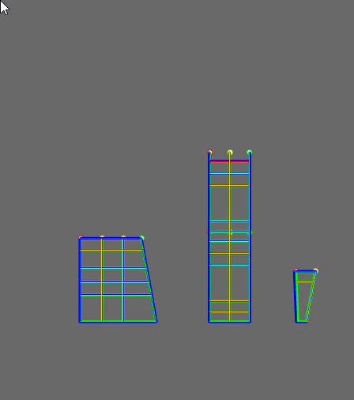
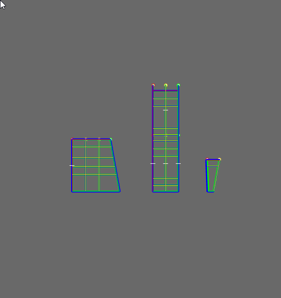
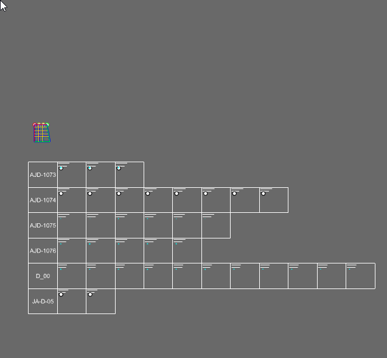
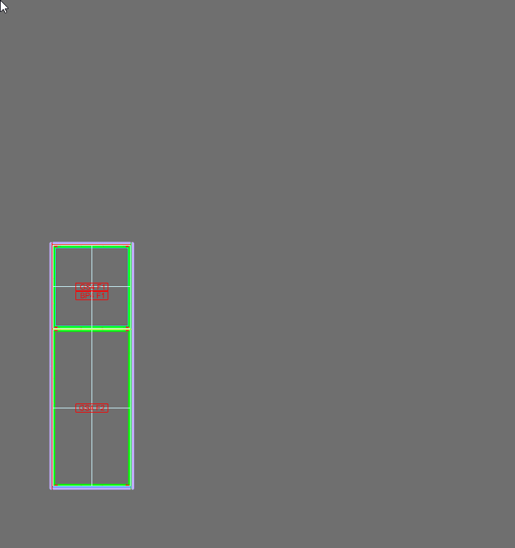
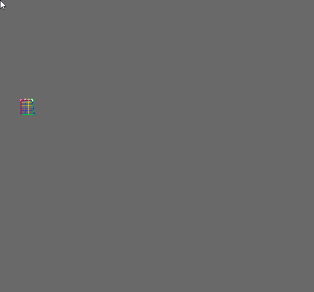
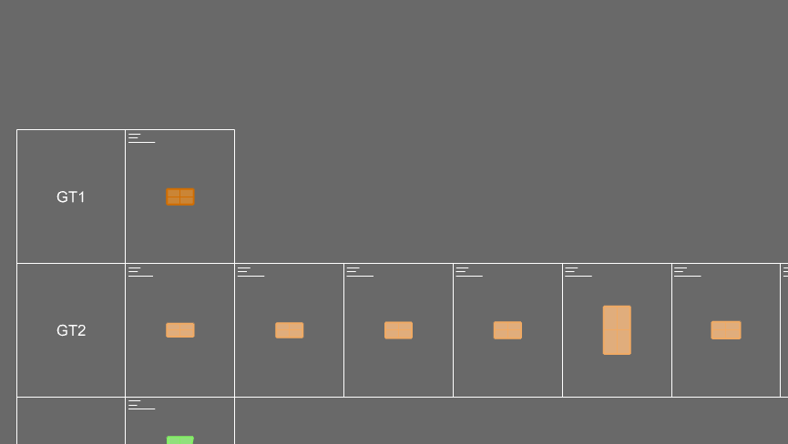
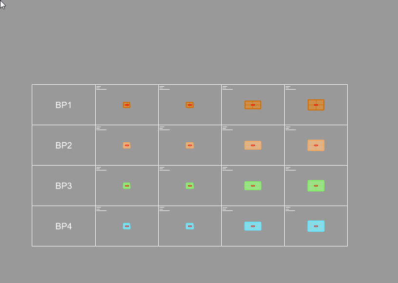

01
옮겨 적는 작업을 줄입니다
모델에 기록된 Profile과 Block 정보를 번호표, 자재표, 가공도에 다시 입력하지 않고 분석해 사용합니다.
RCW V5는 완성된 3D 모델의 형상과 데이터를 분석해 제작 번호를 부여하고, 자재·절단 리스트, 가공도, Unit 입면과 단면을 같은 기준에서 만듭니다.
한 번 확인한 모델을 여러 문서에 다시 옮겨 그리지 않습니다.

Why one source matters
RCW는 3D 모델을 제작 정보의 공통 기준으로 사용합니다. 번호, 길이, 수량, 치수와 단면이 서로 다른 문서에서 따로 관리되지 않도록 연결합니다.
모델에 기록된 Profile과 Block 정보를 번호표, 자재표, 가공도에 다시 입력하지 않고 분석해 사용합니다.
같은 Fab No와 ProfileData가 리스트와 도면의 공통 기준이 되어 부재를 추적하고 검토하기 쉬워집니다.
모델을 수정한 뒤 동일한 명령과 기록된 가공도 스타일을 적용해 변경 내용을 새 문서에 반영할 수 있습니다.
From model to production package
모델의 각 부재에 제작 번호가 생기면 수량과 길이를 집계하고, 해당 부재의 형상과 가공 정보를 도면으로 만들 수 있습니다.
FabNo는 선택한 Frame Brep과 Block의 Profile 이름과 형상 조건을 비교해 제작 번호를 기록합니다. 이후 리스트와 가공도는 이 번호를 기준으로 같은 부재를 구분합니다.

Molist와 PMolist는 모델의 ProfileData와 Block 정보를 집계해 자재표를 만듭니다. Cuttinglist는 필요한 절단 길이를 바탕으로 장바 길이와 Loss를 계산하고 절단 계획을 작성합니다.

FDwg와 FDDS는 선택한 Frame 그룹을 분석해 정면·단면 2D 선, 홀 직경, 전체·중심·각도 치수와 Fab No·수량·Unit No 정보를 배치합니다.

U2D는 선택한 Solid Unit의 단면 2D와 Fablist를 한 번에 생성합니다. UF2D는 여기에 정면 입면과 치수를 더해 제작·조립·검토에 필요한 Unit 문서 세트를 구성합니다.

A connected production path
모든 결과물은 모델의 형상과 ProfileData를 읽습니다. 앞 단계에서 정한 번호와 데이터가 다음 문서의 기준이 됩니다.
부재 형상, Block, ProfileData와 Unit 그룹을 검토합니다.
동일한 Profile과 형상 조건을 분석해 제작 번호를 기록합니다.
자재 수량, 중량, 절단 길이와 Loss를 표로 만듭니다.
형상, 단면, 치수, 홀과 부속 정보를 제작 도면에 배치합니다.
입면·단면·치수·Fablist를 조립과 검토 자료로 구성합니다.
More deliverables from the same model
구성요소마다 필요한 도면과 표의 형식은 다릅니다. RCW는 모델에 기록된 타입과 데이터를 읽어 각 부품군의 제작 자료를 만듭니다.

Profile 이름과 Fab No별로 부재 형상, 수량과 길이를 표로 배치합니다.

Glass Solid의 형상과 타입을 기준으로 제작 도면과 타입별 표를 작성합니다.

BackPanel Solid에서 정면·측면·상부 View와 필요한 치수를 생성합니다.

가공도에 수집된 부속 데이터를 부품명과 수량이 보이는 표로 정리합니다.
Record once, reproduce consistently
FDstyle은 FDwg·FDDS의 옵션과 추가 작업을 Profile별로 기록하고 재생합니다. 처음 가공도에서 검토한 치수, NC 표, 주석, 부속표, Detail View와 양식을 반복 부재에 같은 기준으로 재현합니다.

FDstyle Record / Playback — 검토한 가공도 표준을 Profile 단위로 저장하고 재사용합니다.